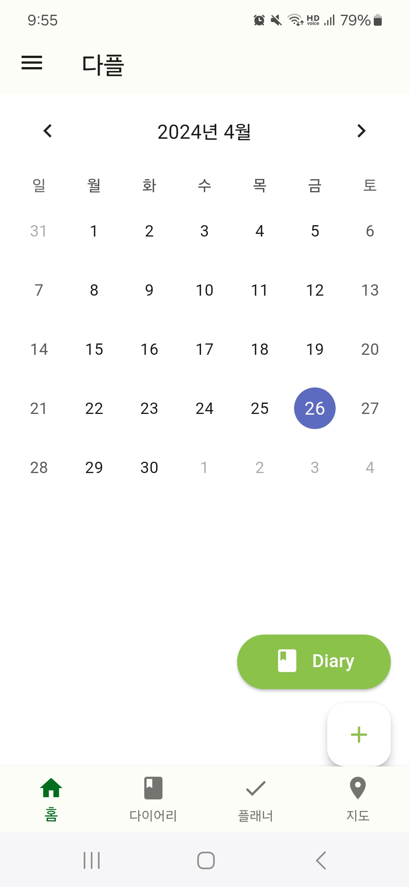
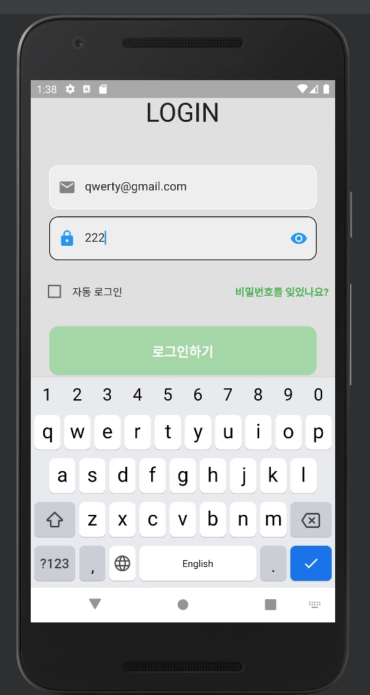
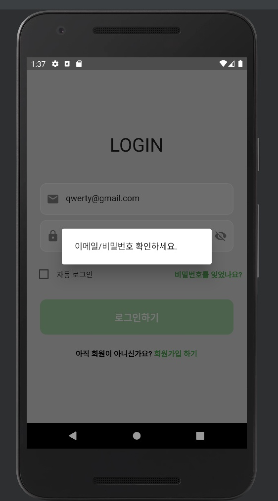
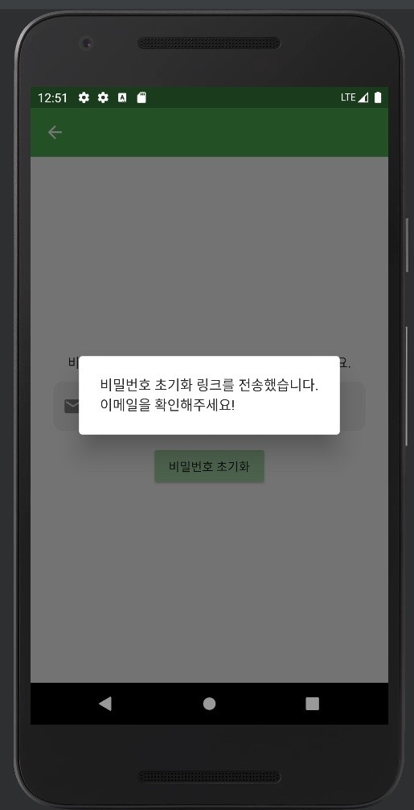
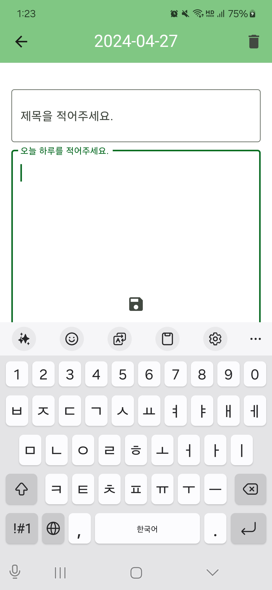
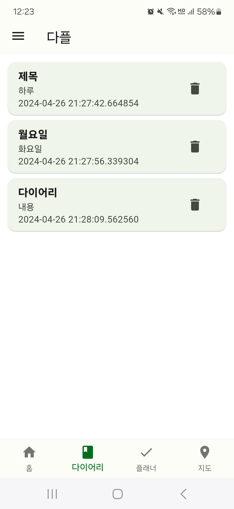
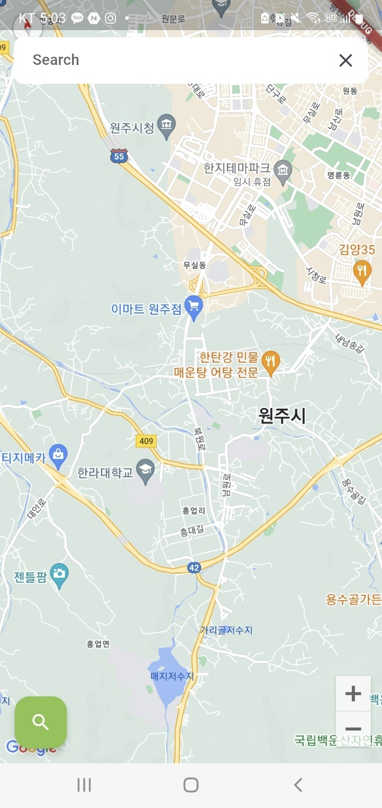
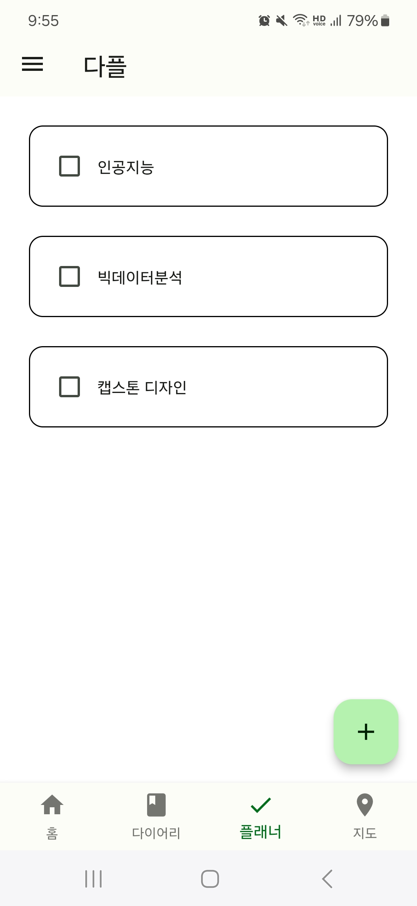
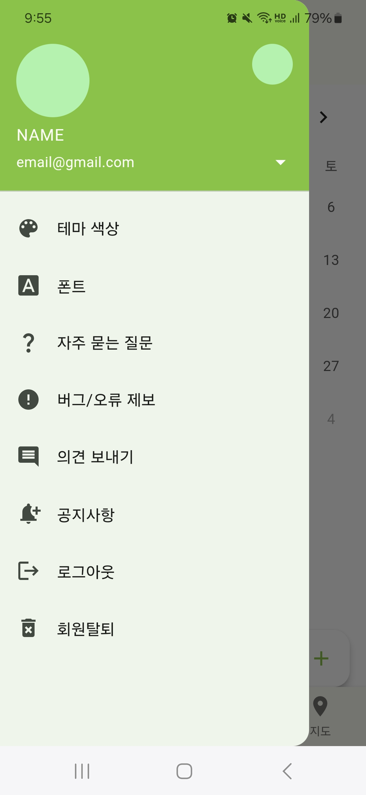
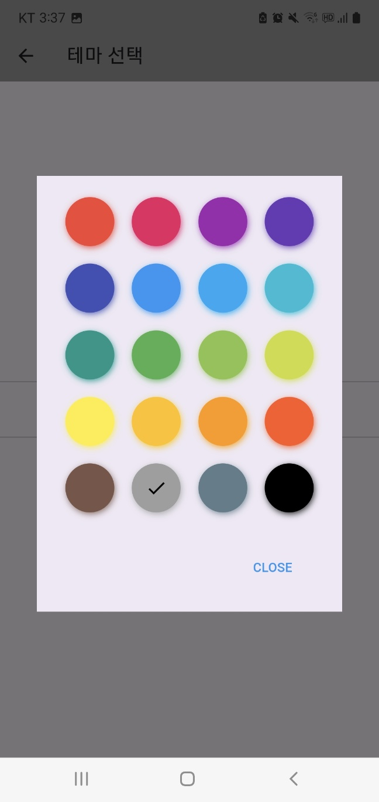

다플 앱의 로고이다.
홈 화면에서 날짜 선택하고 하단에 위치한 (+)모양의 버튼 클릭 시, 선택한 날짜에 대한 다이어리를 작성할 수 있는
화면으로 이동한다.

앱 접속 시에 나타나는 Splash 화면이다.
자동 로그인 기능과 가려진 비밀번호가 보일 수 있도록 하였다.
메일 주소와 비밀번호를 틀렸을 경우 경고창을 띄우도록 하였다.
비밀번호를 분실했을 경우, 비밀번호 리셋이 가능하도록 하였다.



화면 상단에는 작성 날짜가 표시되어 있고 제목과 내용 입력란이 있고, 다이어리를 저장할 수 있는 버튼과 삭제할 수 있는 버튼을
구현하였다.
내비게이션 바에서 다이어리 항목을 선택하면 그동안 작성한 다이어리 목록을 한 눈에 볼 수 있고,
다이어리의 제목과 작성일도 확인할 수 있다.


내비게이션 바에서 기록 항목을 선택하면 기록 화면으로 이동,
자신이 방문했던 장소나 기억에 남는 장소를 기록할 수 있는 화면이다.

다플의 시연 영상이다.
내비게이션 바에서 플래너 항목을 선택하면 플래너 화면으로 이동하고
할 일을 작성하거나 삭제할 수 있도록 하였다.

설정창에서 색상을 선택하면 테마 색상을 변경 할 수 있도록 구현하였다.

